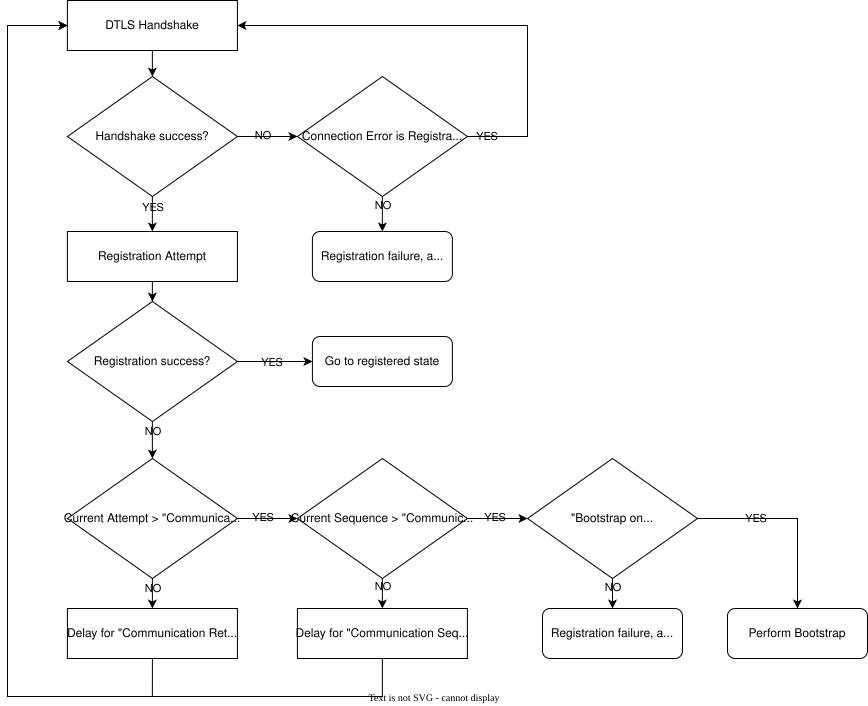

5.7. Network and Server error handling
Like any software that needs to communicate with other hosts over the network, Anjay needs to be prepared to handle communication errors. This page documents the library’s behavior during various error conditions.
5.7.1. (D)TLS Handshake
If configured to use (D)TLS, the TLS backend library performs a Handshake before Request Bootstrap and Register operation. This operation has a standard-defined retries schedule RFC 6347, Section 4.2.4. Timeout and Retransmission. The handshake timers can be customized during Anjay initialization, by setting anjay_configuration_t::udp_dtls_hs_tx_params.
A failed (D)TLS Handshake when trying to perform Bootrstrap Request operation will lead to procedure abort.
A failed (D)TLS Handshake when trying to perform Register operation will lead to Retry or abort registration.
Ultimate timeout, network-layer errors, and internal errors during the handshake attempt will be treated as a failure of the “connect” operation.
5.7.2. Outgoing request error handling table
The following table describes the behavior of Anjay when various error conditions happen while performing each of the client-initiated operations.
Request Bootstrap |
Register |
Update |
De-register |
Notify (confirmable) |
|
|---|---|---|---|---|---|
Timeout [1] |
Abort all communication [3] |
Fall back to Register |
Ignored |
Ignored by default; configurable; will be retried whenever next notification is scheduled |
|
Network (e.g. ICMP) error |
Fall back to Client-Initiated Bootstrap |
Fall back to Client-Initiated Bootstrap |
|||
CoAP error (4.xx, 5.xx) |
Fall back to Register |
n/a |
|||
CoAP Reset |
Fall back to Client-Initiated Bootstrap |
Cancel observation |
|||
Internal error |
Fall back to Client-Initiated Bootstrap |
Cancel observation if “Notification storing” is disabled |
5.7.2.1. Send Operation Errors
As shown in Send method example, Send is the only operation that the application calls implicitly, and thus the only one with a dedicated finish handler. Please see it’s documentation for details on how are errors during Send operation reported, and how can they be handled (i.e. see anjay_send_deferrable()).
5.7.3. Registration retries and abort
This condition corresponds to the registration failure as used in the Bootstrap and LwM2M Server Registration Mechanisms section of LwM2M Core TS 1.1.
{kind=link}

Registration Sequence Diagram
If Anjay is compiled with support for LwM2M 1.1 or LwM2M 1.2, the retry procedures will be performed as described in that section of the LwM2M Technical Specification. The parameters are stored in the appropriate Server Object instance. There is also a set of default values listed in the “Registration Procedures Default Values” table. According to this configuration, further failures may result in the “abort all communication” [3] or “fall back to Client-Initiated Bootstrap” condition.
In builds of Anjay that do not support LwM2M 1.1 or 1.2, the “abort registration” condition is equivalent with the “fall back to Client-Initiated Bootstrap” condition.
5.7.3.1. Retry Mechanisms
The retry mechanism consists of two levels: attempts within a sequence and multiple sequences:
Resource ID |
Parameter Name |
Description |
|---|---|---|
17 |
Communication Retry Count |
The number of successive communication attempts within a single retry sequence before it’s considered failed. |
18 |
Communication Retry Timer |
The delay (in seconds) between successive attempts within a sequence. This value is multiplied by 2^(Current Attempt-1) to create exponential back-off. |
19 |
Communication Sequence Delay Timer |
The delay between successive communication sequences after exhausting all retry attempts. |
20 |
Communication Sequence Retry Count |
The maximum number of retry sequences before a registration attempt is considered failed. |
5.7.3.2. Error Recovery and Fallback
Bootstrap on Registration Failure (Resource 16): If set to true, indicates the client should re-bootstrap when registration is explicitly rejected or considered failed. If false, the client continues with registration attempts as dictated by the other resource settings. Default: true
The retry flow follows these procedures:
Single Ordered/Unordered Server Procedure: Individual server registration with retry logic
Within each sequence: attempts are made up to Communication Retry Count with exponential back-off
Between sequences: delay by Communication Sequence Delay Timer
After exhausting all sequences: trigger bootstrap if configured
When Anjay is compiled with support for LwM2M version 1.1 or 1.2, these retry procedures are automatically performed according to settings in the Server object instance.
Configuration structure Fields
The anjay_server_instance_t structure includes these LwM2M 1.1 fields
(as pointer fields for optional resources). To configure these resources, set
the pointer fields to point to actual values when creating a server instance:
const anjay_server_instance_t server_instance = {
.ssid = 1,
.lifetime = 60,
.binding = "U",
.bootstrap_on_registration_failure = &(const bool){true},
.communication_retry_count = &(const uint32_t){3},
.communication_retry_timer = &(const uint32_t){60},
.communication_sequence_retry_count = &(const uint32_t){2},
.communication_sequence_delay_timer = &(const uint32_t){3600}
};
Skipping initialization of these resources leaves them undefined, causing Anjay to perform single sequence, with single attempt.
Connect operation errors can occur for several reasons, the most common being:
Domain name resolution errors. If the
getaddrinfo()call (or equivalent) fails to return any usable IP address, this is also treated as a failure of the “connect” operation.TCP handshake errors. While the actual socket-level “connect” operation does not involve any network communication for UDP and as such can almost never fail, it performs actual handshake in case of TCP. Failure of this handshake is also treated in the same way as the other cases mentioned here.
In some cases, inconsistent data model state may be treated equivalently to a connection error, e.g. when there is no Security object instance that would match a given Server object instance.
Note that all of the operations mentioned above (domain name resolution and TCP) as well as DTLS Handshake are performed synchronously and will block all other operations.
If any of the above conditions happen, Anjay will, by default, fall back to Client-Initiated Bootstrap or, if the attempt was to connect to a Bootstrap Server, cease any attempts to communicate with it.
Note
Unless regular Server accounts are available, this will mean abortion of all communication [3].
This behavior can be changed by enabling the connection_error_is_registration_failure. In that case, connection errors will trigger Registration retries and abort, and thus the automatic retry flow described in “Bootstrap and LwM2M Server Registration Mechanisms” section mentioned above will be respected.
Note
Registration Priority Order (Resource 13) and Registration Failure Block (Resource 15) are not supported in Anjay.
5.7.3.3. Registration Update
To prevent the device from missing the Registration Expiration deadline (e.g., if an Update message gets lost and requires retransmission), Anjay schedules Update messages based on the Lifetime value itself:
If Lifetime < 2 * MAX_TRANSMIT_WAIT, the update is scheduled at Lifetime / 2.
Otherwise, the update is scheduled at Lifetime - MAX_TRANSMIT_WAIT.
(Note: MAX_TRANSMIT_WAIT is a standard CoAP transmission parameter, which defaults to 93 seconds).
5.7.4. Client-Initiated Bootstrap
Client-Initiated Bootstrap will be performed only if all the following preconditions are met:
a Bootstrap Server Account exists
no other LwM2M Server has usable connection
the Bootstrap Server Account has not aborted due to previous errors
Otherwise, further communication with the server with which the operation failed
will be aborted. This may cause anjay_all_connections_failed()
to start returning true if that was the last operational connection.
Connection can be retried by calling anjay_enable_server()
or anjay_transport_schedule_reconnect().
5.7.5. Other error conditions
Errors while receiving an incoming request, or any unrecognized incoming packets, will be ignored
Errors during anjay_download() data transfers will be passed to the appropriate callback handler, see the documentation to anjay_download_finished_handler_t for details. CoAP downloads support automatic resumption of downloads after network errors, see the How can we ensure higher success rate? for details.
Footnotes